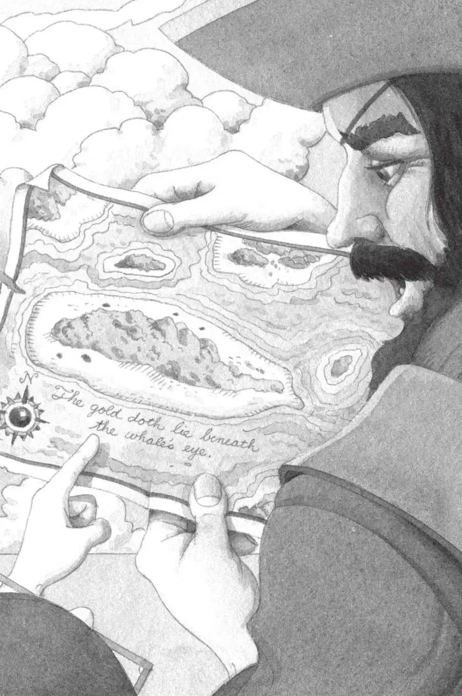

杰克和安妮惊恐地注视着他们。
一心想得到金子的海盗看上去像疯子一样。
杰克捅了捅安妮，他们悄悄地从海盗身边走开，朝树屋的方向移动。
“站住！”骷髅船长大喊一声，用两把手枪瞄准他们，“不许再走一步，笨蛋！”
杰克和安妮站住不动了。
骷髅船长咧嘴一笑，露出两排黑牙。
“快告诉骷髅大爷，其他的藏在哪儿。”他大喊，“不然就受死吧。”
“其他的什么？”安妮问。
“其他的宝藏！”骷髅船长吼道，“我知道它们就在这个岛上，我有地图！”他伸手从腰包里掏出一张破破烂烂的纸，在杰克和安妮的面前挥了挥。
“这是藏宝图吗？”杰克问。
“没错，这是一张关于基德宝藏的地图。”骷髅船长说。
“什么鸡的、鸭的，跟我们可没关系。”安妮说，“我们根本就不知道什么鸡的宝藏。”
“我们为什么不仔细看看地图呢？”杰克说。
“你来看！”骷髅船长把地图举到杰克面前。
杰克盯着纸上那些奇怪的符号。
“这是什么意思？”杰克问。
“什么是什么意思？”骷髅船长不耐烦地说。
“这些话。”杰克指着地图底部的那些文字。
“这个嘛……”骷髅船长眯起那只没瞎的眼睛，看了看，然后皱起眉头咳了几声，又揉了揉鼻子。
“哎，你别让他读了。”红毛朝杰克喊。
“他根本不认识字。”臭货说。
“闭嘴！”骷髅船长朝他的两个手下怒吼。
“我和杰克认识字。”安妮插嘴道。
“嘘。”杰克小声说。
“船长，叫他们看看地图上写了什么！”臭货说。
骷髅船长狠狠地瞪了杰克和安妮一眼，吼道：“快念给我听。”

“然后你就放我们走？”杰克问。
骷髅船长眯起了他那只好的眼睛说：“没错，笨蛋。等找到宝藏，我就放你们走。”
“好吧，我就给你念一念。”杰克说，“这上面写的是，金子藏在鲸的眼睛下面。”
“什么？”骷髅船长皱起了眉头，“那是什么意思呢，笨蛋？”
杰克耸了耸肩膀。
“岂有此理！把他们押到船上去！”骷髅船长嚷道，“让他们在那里等死，除非他们愿意告诉我们怎么才能找到基德宝藏！”
杰克和安妮被扔进了小艇。
海浪冲刷着船舷，头顶上的天空布满了大片黑压压的乌云，一阵大风刮了起来。
“快划，赖狗，快划！”骷髅船长说。
红毛和臭货开始把小艇划向那艘大船。
“看！”安妮指着海岸对杰克说。
那只名叫波利的鹦鹉正在沙滩上空飞翔。
“它想帮助我们。”安妮轻声说。
波利飞向波涛汹涌的大海。可是，风太大了，它转过身，又飞回了小岛。